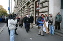

2006.11.02., csütörtök
tomcat
blog
droidzóna
levrov
A november 4-ére való felkészülés keretében ma tüntetni mentem. Hát, igen, aki egyszer ebbe belekóstol... A november 4-i terveken még gondolkodom, különösen azok után, hogy délelõtt rám telefonált egy Magyar Hírlapos kolléga, és miután eldöntöttük, hogy tegezhet, kerek perec nekem szegezte a kérdést, hogy mit fogok csinálni aznap. Mondtam, hogy a fiúk már telepítik a bombákat, célpontunk természetesen az összes közjogi méltóságok és a balliberális újságírók, így természetesen a Magyar Hírlap is, amire egy rakétát is beirányoztunk, hátha besülne a bomba. Megköszönte, hogy gondoltam rájuk, és figyelmeztetett, hogy a szerkesztõség az elsõ emeleten van. Azt hitte viccelek. No, majd csodálkoznak. A Demokrácia Harcosai nevû társaságot is telefonbetyárnak hitték, aztán hogy-hogy nem, megostromlódott a tévészékház.
Egyszóval tüntetés. A Kossuth térre ma 15 órára hirdetett tüntetést a Védegylet. Ez önmagában még annyira sem érdekelne senkit, mint a horgászok ötperces figyelmeztetõ sztrájkja, elvégre ki a tök az a Védegylet, kábé annyi értelme lehet, mint a Pajzs Szövetségnek, a Szittya Világkongresszusnak vagy a Kétfarkú Kutya Pártnak. A különbség, hogy egyrészt a Védegylet nem a nemzeti oldalhoz, hanem a liberálisokhoz köthetõ, másrészt annak idején õk javasolták Sólyom Lászlót a köztársasági elnöki posztra, aztán az is lett, bár a Védegyletrõl se addig, se azóta nemigen hallott senki. Érdekes, hogy egy ilyen kis piszlicsáré civil szervezetnek ekkora lobbiereje van, közben pedig azt se tudjuk, kicsodák ezek, kit védenek és kitõl, meg ki kérte fel õket erre, és vajon újabban ilyen hatékony-e a civil szféra, vagy egy rejtett szabadkõmûves páholyhoz van szerencsénk. A Védegylet egyébként az alábbiakat közli magáról saját weboldalán:
"Utódaink, földi otthonunk és hazánk jövõje iránti aggodalomtól vezetve 2000 márciusában Védegylet néven civil politikai szervezetet alakítottunk.
Célunk a természeti és kulturális sokféleség megõrzése, a környezetünkért viselt felelõsségtudat megerõsítése, egy jobb minõségû élet feltételeinek megteremtése Magyarország minden lakója számára."
Ezek éppenséggel a szabadkõmûves mozgalom deklarált alapcéljai, de ezt most hagyjuk. Szóval a köztársasági elnököt gründoló Védegylet ma 15 órakor összezördítette a fél budapesti sajtót a Kossuth téri metrókijárathoz azzal, hogy õk most jól megmondják, mi a szar ezen a magyar ugaron, vagyis hogy mitõl sánta a magyar demokrácia, tizenkét pontba szedve. E tizenkét pont a következõképp hangzik:
1. Baloldalinak lenni nem jellemhiba!
2. Jobboldalinak lenni nem jellemhiba!
3. A baloldaliak nem kommunisták!
4. A jobboldaliak nem nácik!
5. A kormány ellen tüntetni demokratikus alapjog!
6. Az utcai politizálás differenciálatlan megbélyegzése antidemokratikus!
7. Az erõszakos, félelmet keltõ tüntetés antidemokratikus, dobálni, gyújtogatni, verekedni az utcán bûncselekmény!
8. Árpádsávos zászlóval tüntetni ott, ahol ez a zászló a tömeggyilkos rezsim egyik szimbóluma volt, félelemkeltõ!
9. Bejelentett, törvényes demonstráció résztvevõit megvédeni a rendõrség alapvetõ kötelessége!
10. A rendõri eljárásban elkövetett bántalmazás bûncselekmény!
11. Semmit sem szólni az ellenfél nagyobb bûnére hivatkozva, jellemhiba!
12. Gyûlölni egymást ostobaság, a legfõbb veszély, ami a demokráciára leselkedik!
Ezekkel persze még egyet is lehet érteni, kivéve a 8. pontot. Egyrészt mert a zászló helyesen "Árpád-sávos," másrészt a jó édes szabadkõmûves apátok a félelemkeltõ, nem a mi ezeréves történelmi zászlónk. Akinek nem tetszik, az ne vándoroljon be ide. Arról nem is beszélve, hogy a nyilasok zászlaja nem is Árpád-sávos volt, ugyanis az Árpád-sávos lobogó négy vörös és négy fehér sávból áll, s a legfelsõ vörös sáv "farokként" túlnyúlik a zászlón, a nyilas zászló pedig öt vörösbõl és négy fehérbõl állt, középen a nyilaskereszttel. Ezzel az erõvel az útlezárások piros-fehér csíkos kordonjaitól is meg lehetne ijedni, aztán emiatt belefordulni a Suzukival a négyes metró gödrébe, és utóbb leperelni a gatyát az antiszemita BKV-ról. De inkább nem adok ötleteket.
Tüntetni nem megyek tábla nélkül. Az idõ rövidsége miatt ezúttal csak erre a két laminált lapra futotta. Sebaj, csak jó lesz valamire.
A fagyos Kossuth tér, fél háromkor: nagy létszámban jelen a gumilövedékes fiúk, tüntetõk sehol
Láttam már pár tüntetést, de olyat még nem, amire nem jön el senki. Addig is, amíg a helyzet valami változást mutat, elmentem körülnézni a kihalt Kossuth téren. Megcsodáltam a rendõröket, a kerítést, a német nagykövet autóját, amint épp behajtott, tanúja voltam egy titkárnõ beengedésének a szigorított beléptetõrendszeren, valamint elmagyaráztam egy francia turistának, hogy miért néz ki úgy a Kossuth tér, mintha a kutya szájából rángatták volna ki.
Senki nem vette a fáradságot, hogy a másfél hete lerakott koszorúkat, virágokat összeszedje, a szétolvadt mécseseket feltakarítsa. Fõvárosunk középpontja igényes, európai látványt nyújt.
Vicces tábla
Megmondós tábla
Megátkozós tábla
Velõs vélemény
Matrica
Háromnegyed négy: még mindig sehol senki. Kezdtem azt hinni, hogy elnéztem valamit. Mindenesetre felvettem a sárga mellényemet, és tovább nézelõdtem.
Történelmi párhuzamok
Jelzõs szerkezetek

Dicséret
További magasztalások
Három elõtt pár perccel, nicsak: valami csoportosulásocska...

... tüntetésecske. Kõkemény nyolc ember érkezett a tüntetésre, és jó kétszer ennyi újságíró.
Jókora táblákat cipeltek, ezekre volt felírva, mit is akarnak tulajdonképpen
Felálltak velük szépen, félkörben a Parlament elõtt, és ezzel demonstrálták, hogy õk itten demonstrálnak. A sajtó meg fotózta. A táblásokon kívül más résztvevõ azonban nem mutatkozott.
Ha már ilyen szépen sorbaálltak, fogtam magam, és beálltam én is a sor végére, saját tábláimmal. A sajtó mindjárt oda is fordult, a kérdések közül pedig riadtan odaszaladt a hármas.
- Ajajj... ööö... Tomcat... hát... mi nem akarjuk ezt! - aggodalmaskodott.
- Sajnálom - feleltem, és igyekeztem úgy tartani a táblákat, hogy a szél se csavarja ki a kezembõl, és a kamerák is jól lássák.
- De ööö... mi ezt tényleg nem szeretnénk...
- Így jártatok.
- Na de... Ha úriember vagy, akkor nem csinálod ezt! Igen, ha úriember, akkor nem...
- Ez nem úriemberség kérdése. Ti itt egy magyar történelmi jelkép ellen tüntettek. A többi ponttal egyetértek, de ezzel nem.
- De izé... úriember nem csinál ilyet... - próbálkozott még egy kicsit.
- Akkor nem vagyok úriember - zártam le a vitát.
A kis közjáték után a társaság elindult világgá
A zebrán egy kis kavarodás támadt, nem tudták eldönteni, itt is felálljanak-e, az autósok nagyobb örömére, vagy se. Végül nem tették.
Megmutatták a táblákat Nagy Imre szobrának is, aki rezignáltan nézett
Az újságírók is rezignáltan néztek. A védegyletesek felpakolták a tábláikat, és továbberedtek. Az újságírók egyre lanyhuló érdeklõdéssel szivárogtak utánuk.
- Most ezek hová mennek? - kérdeztem a mellettem tanácstalankodó kollégát.
- Asszem a Szabadság térre, onnan a Deákra, az Astoriára és a Ferenciek terére.
- Mi ez, valami gyalogtúra? Miért pont oda?
- Azt mondták, oda mennek el, ahol az elmúlt hetekben erõszakos cselekmények történtek.
- Aha. Olaszliszka nincs a listán?
- Az nincs.
- Bocsneharagudjálmár - fordult oda egy húszévesforma, szõke gyerek - te melyik lapnak fotózol?
- Én a saját blogomnak. Esetleg a kuruc.info átvesz majd képeket.
- Izé... én az Index munkatársa vagyok - felelte, és az arcáról lerítt, hogy próbál visszaemlékezni, hol látott már.
- Örvendek.
Az indexes elpályázott a Szabadság tér felé, amerre az egyre csökkenõ társaság távolodott. Néhány kolléga a metró felé indult. A Magyar Fórum munkatársával maradtunk ott.
- Még ilyen hülyeséget - csóválta a fejét. - Még hogy félelmet kelt az Árpád-sávos. A piros-fehér-zöldre is lehetne ezt mondani, hiszen a kommunisták azt is használták.
- Én azért többre számítottam. Valami beszédre legalább. Erre ezek gyalogtúráznak. Miféle tüntetés ez?
- Hát csak túrázzanak, én inkább hazamegyek ebben a hidegben. Isten vele.
- Isten vele.
Ezt a szórólapot hazafelé menet nyomták a kezembe. Feltûnt már valakinek, hogy ezt a céget legalább három éve folyamatosan számolják fel? Legalábbis azóta osztogatják a szórólapjaikat, csak mindig máshol mennek csõdbe.
Magánüzenet a végére, blogzárta után: üzenem annak a patkánynak, aki ma betévedt a raktárba, és mivel a megbetegedett Loydit helyettesítõ anyám nem tudta fejbõl a rendelését, üvöltözni meg köpködni kezdett: apám, meg ne lássalak akárhol a világban, mert kiverem az összes nyálmirigyedet. Az a kurva szerencséd, hogy elõbb elmentél, mint hogy odaértem.